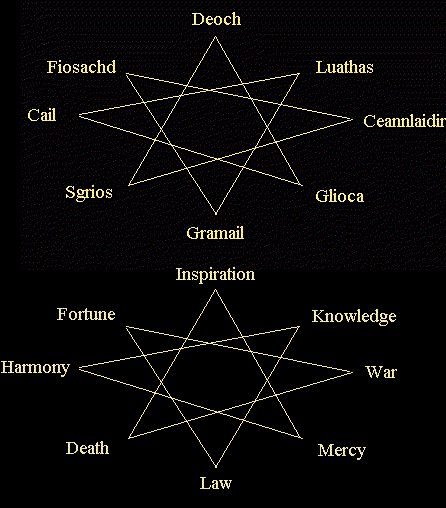

The two octagrams below contain much information useful to the curious Aisling. They contain the natural affinities of each deity, their opposites, and gods to which each deity clashes with as they attempt to resolve their purpose on earth. The higher will be familiar, while the lower merely substitutes the gods’ names for their respective domains.
Each deity’s polar force is opposite them on the diagram, but this does not imply enmity, necessarily : merely contrast. The deities that flank each god are those, which they strive with most commonly on a daily basis.

Deoch : The Creative Spark
- Opposite : Gramail : The law of man. Creativity does not flourish in a land of rigidity.
- Enmities : Fiosachd, pure luck, and Luathas, divine knowledge. The chaos of pure luck
leaves the creative impulse with a myriad of unfinished projects, while divine
inspiration, dictated from above, leaves no room for the imagination to roam.
- Alliances: The creative spark interacts most explosively where the friction between
death and love is strongest, for Deoch turned from the hatred of death when
touched by his love for Danaan.
- Alignment : No particular path, but it is said that Aislings sprang from a vision or dream
of Deoch's in the hope of justifying his love, Danaan's, sacrifice. Deoch's
light shines brightest outside Suomi.
In Suomi, I chanced along a rogue who worships Deoch, and I asked him how he follows this path. He explained that, in Suomi, Deoch is well known, for it was through worshipping him that the smiths discovered how to harness the properties of the emerald, which bestows a greatly increased constitution to all who wears it. As this rogue diligently practiced his gem-cutting abilities, we spoke of his path. He spoke this rhyme to me :
All who toil for love
Who once loved only the dark
Grasp the fire above
Pull from your spirit a spark
Close your eyes and you shall see
The vision of light which follows thee.
Glioca : Compassionate Love.
- Opposite : Sgrios, Death. Love of life is forever against the hatred of Death.
- Enmities : Ceannlaidir, warfare, and Gramail, human law. Ceannlaidir entirely lacks
Glioca's capacity for mercy, and causes the suffering of all, and Gramail's
search for only justice also denies the capacity to forgive or show mercy.
- Alliances : Compassion flourishes when surrounded by Cail's natural strength, and
Deoch's love for her mother, as well as his zest for sparking life, draws
Glioca.
- Alignment : Patron guide of Priests, her temple resides just outside Mileth, where all who
are weary of the battle with the dark can come for renewed strength and aid.
Glioca is our light in the darkness, the moon we follow on the darkest of nights. Her followers, the kindest and most merciful of the pantheon, are strangely often the least gifted at explaining their path to another. Hate is something they simply cannot understand, and so meet it with only compassion and care. Even those you would most think opposed them, such as the strictest lawgiver or the most bloodthirsty warlord, meet only shock or pity from Glioca's worshippers, for they cannot fathom how one could neglect to see the beauty of the life which fills everything. If you ask them to say why they act as they do, they will only smile, or perhaps hum a tune, before going on their way to engage in their never-ending struggle to save all from Sgrios' cruel grip. They are not innocents, for they see the dark, they are simply mirrors, which reflect the light and so outshine the dark.
Cail : Nature.
- Opposite : Ceannlaidir, Warfare. Human strategies to wipe out life using artificial means
have no place in the natural scheme of Cail.
- Enmities : Sgrios, death, and Fiosachd, pure luck. Nature is continually healing itself
from Sgrios' attempts to destroy or control it, and Fiosachd's haphazard games
have no place in Cail's well-ordered realm.
- Alliances : Cail combines the pure form of divine inspiration, in nature's design, with
Glioca's gift of compassion, in nature's quiet balance of justice towards
itself.
- Alignment : Patron guide of Monks, his temple holds sway outside Undine, the natural city
who first gave birth to the union of nature and fighting.
Deep within a wooded glen
Train a race of quiet men.
Moss to keep the movements quick,
Chants within to cure the sick.
Know the order of all things,
Peace of mind the vision brings.
Strength within turns night to day,
Will without shall find the way.
- Overheard at a Mass of Cail
Luathas : Divine Knowledge.
- Opposite : Fiosachd, Pure luck. Heavenly inspiration, and its use, has no place for
chance.
- Enmities : Deoch, the creative spark, and Ceannlaidir, warfare. You do not embrace
fancy when dealing with deities, and study or meditation is impossible in
times of war, which is the victory of might, not mind.
- Alliances : Luathas combines the natural depths of Cail with the tempering, grounding
effects of Gramail.
- Alignment : Patron guide of Wizards, his temple is located outside of Rucesion, whose
scholars first discovered the element of light.
As I sought to learn the ways of this god, I chanced upon a wizard, bent with long hours of research. I inquired of him, but he merely handed me a blue powder, and went back to his desk. I gently sniffed the powder, wondering what secrets it contained, and my senses were immediately assaulted with a whirl of sensations. Deep seas, cold winds, burning fires, and suffocating earth surrounded me. I realized, just before losing consciousness, that when the elements are combined heedlessly utter destruction is the only result. With this insight, the onslaught subsided, leaving only a vision of a paradise, now submerged, which I realized was the remains of Hy-brasyl. Opening my eyes, I found that no time had passed, yet aeons had to me, and as I gazed at the scholars, I sensed what they sought : balance with ultimate control.
Gramail : Law and Justice.
- Opposite : Deoch, the Creative Spark. Facts are not imagined or created.
- Enmities : Glioca, compassionate love, and Sgrios, death. Showing too much mercy will
defeat justice, as will too much hate, and human law has no power over death.
- Alliances : Justice, when dealt quickly, is most effective and chance breakthroughs can
reveal truth, as can divine inspiration : therefore, Gramail is friendly with
both Fiosachd and Luathas.
- Alignment : No particular path, as he serves all humanity. His worshippers reside outside
Loures, the seat of government and law for all Temuair.
Gramail's temple is not filled with fevered prayer or emotional offerings. His worshippers instead choose to show it through continual actions that forward the cause of justice, even-mindedness, and the balance of all things. They are an even-tempered lot, who will calmly discourse to you for hours on the politics of a particular region or the intricacies of the balance between nature and man. They do not look to other gods for inspiration or affection, following only Gramail, for they see only his advice as neutral and reliable. Gramail's devotees toil to maintain peace so that Aislings may most effectively counter the chaotic effects of the darkness.
Fiosachd : Wealth, Luck.
- Opposite : Luathas, Divine Knowledge. The followers of Luathas are slow, steady, and
reliant on the gods for their well-being, while Fiosachd prefers to take hasty
chances and trust in the unsure.
- Enmities : Deoch, creative spark, and Cail, natural power. Deoch's creations have little
apparent material use to Fiosachd, so he dislikes them, and Cail's ability to
control seeming chaos and his dislike of man-made things frustrates both
Fiosachd's wish to beat fate and his art in using all tools available to do so.
- Alliances : The wars of Ceannlaidir are a great boon to Fiosachd's treasure hunting
tendencies, and the world of Gramail's law both dares Fiosachd's luck to new
heights, as well as providing loopholes to encourage his activities.
- Alignment : Patron guide of Rogues, his is a free-spirited worship, and his friendship with
merchants and trade endear his followers to the port of Abel.
Fiosachd combines most of the gods' talents and has a natural quickness and affinity for the untamed world, at least as far as he finds it useful for his purposes. He is close to mankind as well, using humanity's talents to seek greater treasure, adventure, and perhaps most of all, wealth. He loves nature as long as it benefits him personally, and he loves humanity as long as we give him new challenges and new conquests. He delights in the art of the chase and the dash, excelling in discovering hidden mysteries, exploiting weaknesses, and trapping all who oppose him with their own weapons. He is not evil, for he despises anything that seeks to control him or destroy what he considers valuable, yet his delight in trickery and illusion has separated him from the pure forces of the light. He is perhaps the most "human" of all the gods.
Ceannlaidir : The art of War.
- Opposite : Cail, the Natural. Successful wars depend on planning and weapons, not the
unharnessed powers of the earth.
- Enmities : Luathas, divine knowledge, and Glioca, pure compassion. War has nothing to do
with either scholars or lovers.
- Alliances: For success in war, Ceannlaidir enlists Fiosachd's quickness and natural luck
as well as Sgrios' appetite for destruction.
- Alignment : Patron guide of Warriors, his temple is found outside Piet, whose strength and
close proximity to Loures makes it an ideal headquarters.
Ceannlaidir's followers are most easily found wherever Sgrios is closest to earth. They are not easy of speech, for they speak from the body, not the mind. Their strategy concerns physical might, and the minds, which control it, as well as the artistry of weapons, humanity's most enduring talent. To understand them, you must fight alongside them, or with them. They do not kill for the purpose of death, as Sgrios does, nor do they delight in the quibbles over ideals. They act for the sake of action, the delight in life and their manipulation of it, for tempting death is also a way of celebrating life.
Sgrios : Death and Destruction.
- Opposite : Glioca : Compassionate Love. Death has no use for it.
- Enmities : Gramail, human law, and Cail, the power of nature. Nature has long
cultivated ways to defeat death and heal from Sgrios' wounds, and Gramail's
attempts to decide who should die and how foil Sgrios' attempt to control all.
- Alliances : Deoch, as he was once an ally of Sgrios, remains so, for after all the Aislings
that Deoch created often come within his grip. Also, Ceannlaidir's wars are a
great donator to Sgrios' ever-hungry jaws.
- Alignment : None, he is the enemy of all living. His worshippers linger somewhere dark,
and conceal the location from prying eyes.
No Aisling may long think on the subject of Sgrios before either being repulsed in both body and spirit or enraptured to his service. His temples are deceptive, dark, strange, and twisted, like his own designs, for Sgrios is no simple god : his ways of luring mankind to his realm are nearly infinite, and as complex as are the veins of the earth. His followers write no literature, master no arts, or erect useless statues. All their efforts are directed towards creating traps for the living and unwary, strengthening Sgrios' grip, or currying his favor so that their own power over the living will increase. Yet he is not the end, for Aislings escape him every day, albeit not unscathed. The battle for souls continues.
table of contents